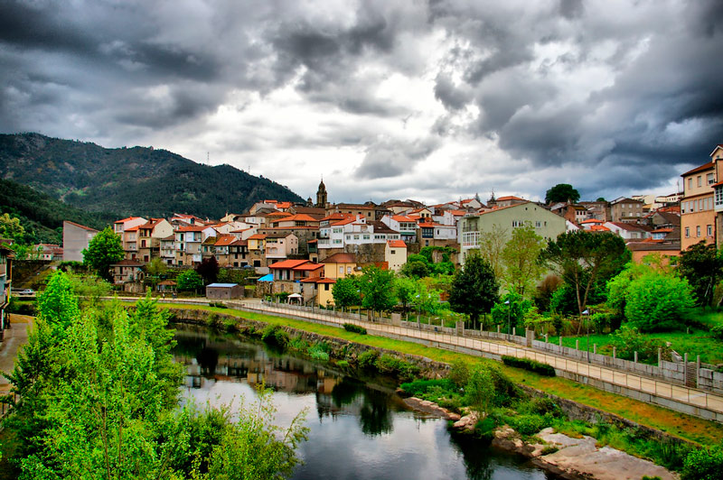
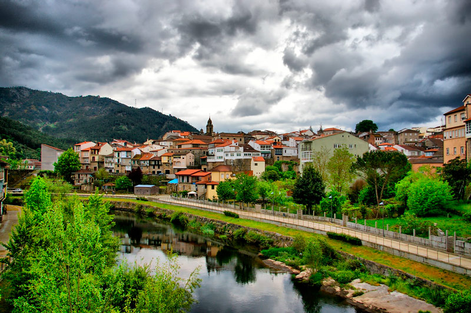
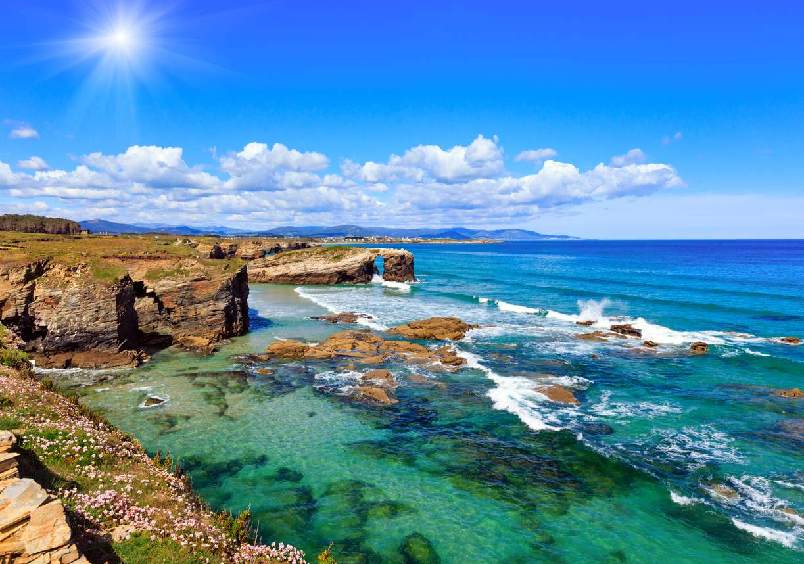
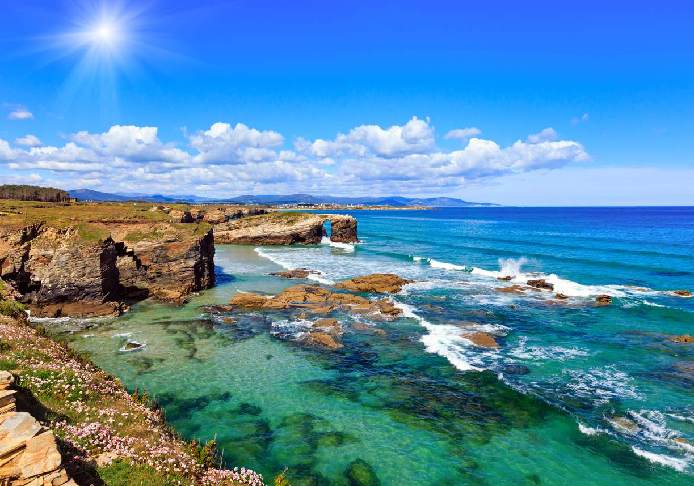
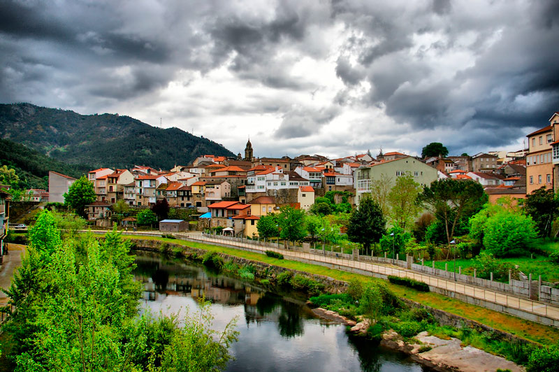
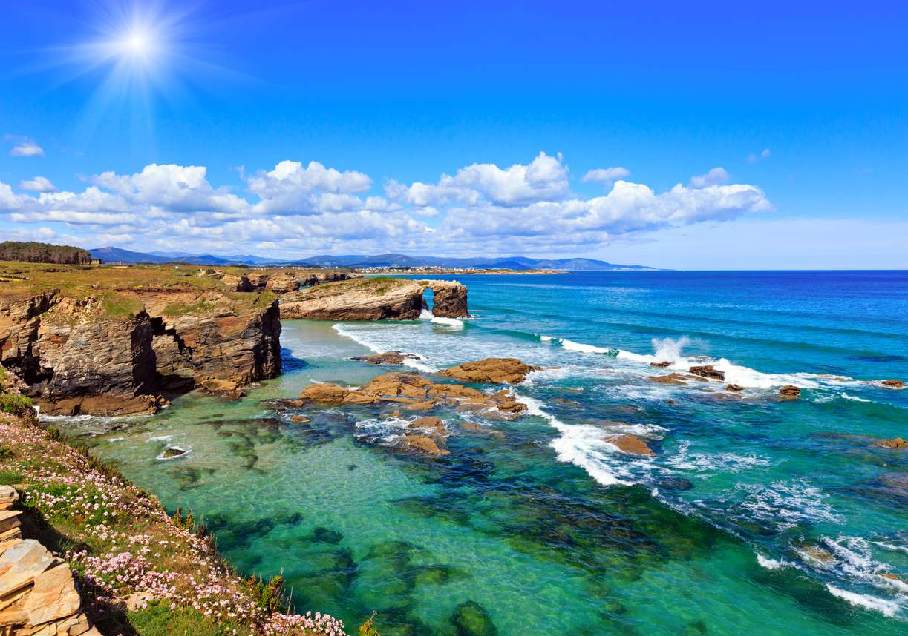

 



Uno de los mayores atractivos de Galicia es su naturaleza.
Tanto en el mar como en la montaña encontramos espacios únicos en los que parece que el tiempo se detiene.
Aquí tienes algunos de las zonas naturales más impresionantes de esta tierra

